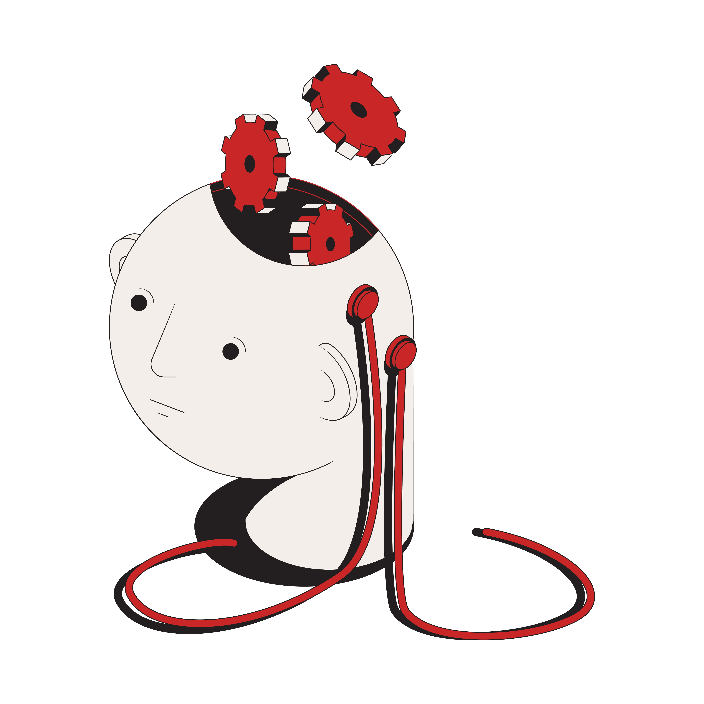

Quando apostar se torna um vício?
Apostar se torna um vício quando você adquire o “Transtorno do jogo”
- Quantias cada vez maiores
- Preocupação frequente
- Retorno frequente ao jogo
- Joga para regular as emoções
- irritabilidade quando tenta parar
- Não consegue parar de jogar
- Depende de empréstimos
- Esconde o envolvimento com o jogo
- Deixa de lado a vida social e profissional
O que acontece no seu cérebro?
- Sistema de recompensa do cérebro fica desbalanceado
- Aumento de cortisol (Aviso e estresse)
- Humor deprimido
- Altos picos de dopamina
- Preocupação constante
- Ansiedade
- depressão
- insônia
- Aumento no risco de problemas cardiovasculares
- Irritação frequente
Consequências à saúde
CAIXA ECONÔMICA FEDERAL TERÁ SUA PRÓPRIA BET
- Aumento nos números de pessoas que apostam:logo isso pode causar um aumento de pessoas endividadas.
- Estratégia DigitalApós obter licença para apostas online, a Caixa vai focar no ambiente digital e competir com outros operadores, explorando também eGames.
- Públicos Distintos As loterias tradicionais atraem pessoas acima de 45 anos, enquanto as apostas esportivas são populares entre menores de 35 anos. A Caixa quer conquistar esse novo público.